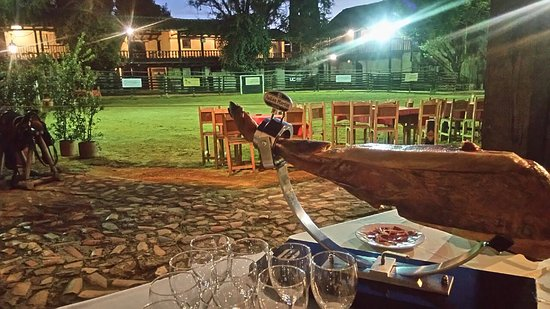
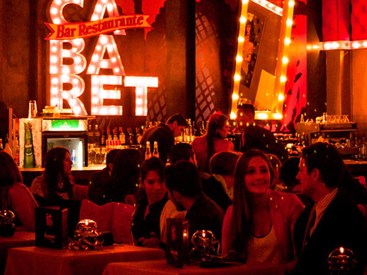
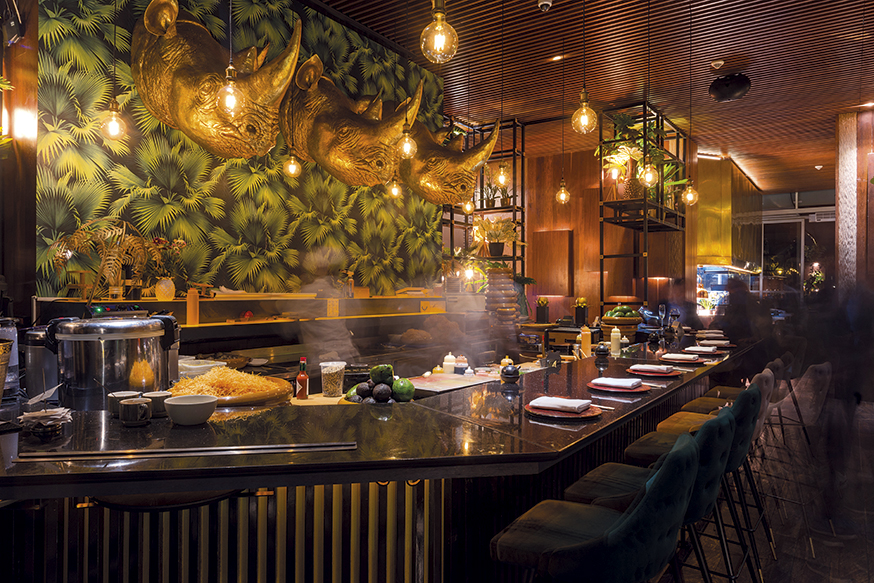

<!-- Your main view, should have "view-main" class -->
<div class="view view-main">
    <!-- Initial Page, "data-name" contains page name -->
    <div data-name="home" class="page">
    <!-- Top Navbar -->
        <div class="navbar">
            <div class="navbar-bg"></div>
            <div class="navbar-inner barra-supmafec">
                <div class="leftmafec">
                    <a href="" class="panel-open"> <i class="fas fa-bars"></i>
                    </a>
                </div>
                <div class="flechamafec">
                    <a href="/actividades/"><i class="fas fa-arrow-left"></i></a>
                </div>
                <div class="titlemafec">Espectaculos</div>
                <div class="iconomafec">
                    <a href="/actividades/"><i class="fas fa-glass-cheers"></i></a>
                </div>
            </div>
        </div>

        <!-- Bottom Toolbar -->
        <div class="toolbar toolbar-bottom">
            <div class="toolbar-inner barra-down">
                <!-- Toolbar links -->
                <a href="#" class="bo">
                    </a>
                <a href="/home/" class="home"><i class="fas fa-home icono"></i></a>
                <a href="/mapa/" class="mapa"><i class="fas fa-map-marked-alt icono"></i></a>
            </div>
        </div>

        <!-- Scrollable page content -->
        <div class="page-content">
            <div class="tourtitulo">
            <p> Los mejores espectaculos que puedes ver en Bogotá</p>
            </div>
            <div class="tourinfo">
                <p> </p>
                <div class = "my-rating"> </div>
                <h3>Andrés Carne de Res</h3>
                <p>Restaurante único en el mundo. Su local se encuentra en Chía, a media hora de Bogotá, al pie de una carretera cuyos atascos (trancones) alargan el trayecto hasta dos horas. Poco importa. Centenares de clientes acuden a vivir la experiencia como si peregrinaran a un santuario. “Andrés es para rumbear y para comer” </p>
            </div>
            <div class="tourinfo">
                <p> </p>
                <h3>El Pórtico</h3>
                <p>Catalogado como “campestre”, es El Pórtico sin lugar a dudas un restaurante bastante particular, pues sus recetas son originales y propias, basadas en la vieja cocina. Pertenece su carta al movimiento “Slow Food” (cocina de elaboración esmerada y lenta). Para los eventos, la cocina de El Pórtico tiene una amplia oferta de tradicionales platos.</p>
            </div>
            <div class="tourinfo">
                <p> </p>
                <h3>Cabaret restaurante bar </h3>
                <p>Es un espacio original, ideal para tus desayunos de placer o trabajo y vivir tardes de tertulia acompañadas de capuccinos, postres y galletas. Cabaret Café es el mejor escenario para empezar el día. Es el nuevo espacio que hemos creado para que las familias de Bogotá vivan momentos increíbles y entretenidos. Arte, música y cultura de una forma divertida.</p>
            </div>
            <div class="tourinfo"> 
                <p> </p>
                <h3>Salvaje Bogotá</h3>
                <p>La tradición de la comida japonesa llegó al Hotel Bioxury Bogotá para ofrecer una experiencia a otro nivel. En Salvaje encontrarás una fusión de gastronomía japonesa y local con ingredientes que llevarán tu paladar al éxtasis, cocteles con mezclas que no encontrarás en otro lugar y la verdadera experiencia Omakase, única en la ciudad</p>
            </div>
            </div>
            
            
            <!-- Link to another page -->
            <a href="index.html">About app</a>
        </div>
        </div>
    </div>